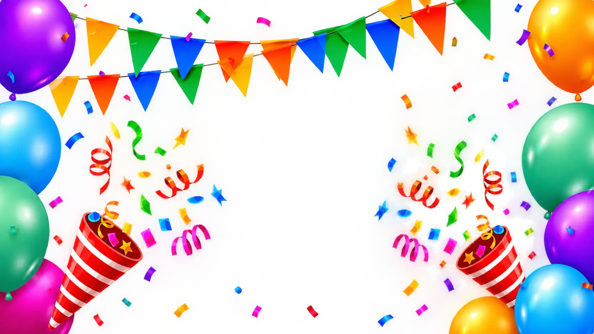

Carregando a competição…
Tela cheia no celular1. Toque em Compartilhar (⬆) no Safari ou no menu ⋮ do Chrome
2. Adicionar à Tela de Início
3. Abra o telão pelo ícone Telão e deite o celularToque para fechar
● AO VIVO2. Adicionar à Tela de Início
3. Abra o telão pelo ícone Telão e deite o celularToque para fechar
--:--
★ HORA QUE VALE OURO--:--

META BATIDA!
peças